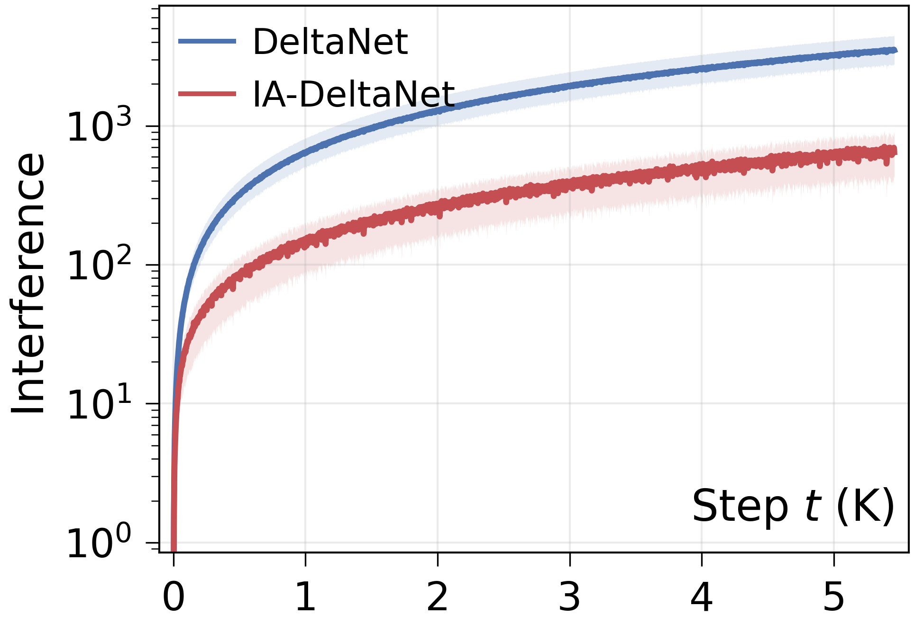
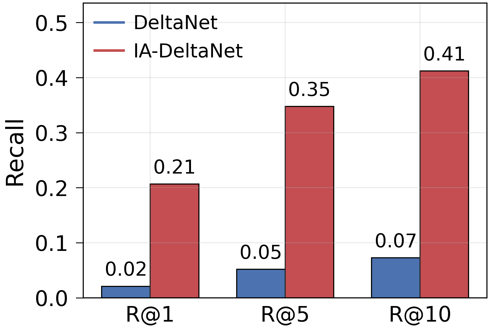
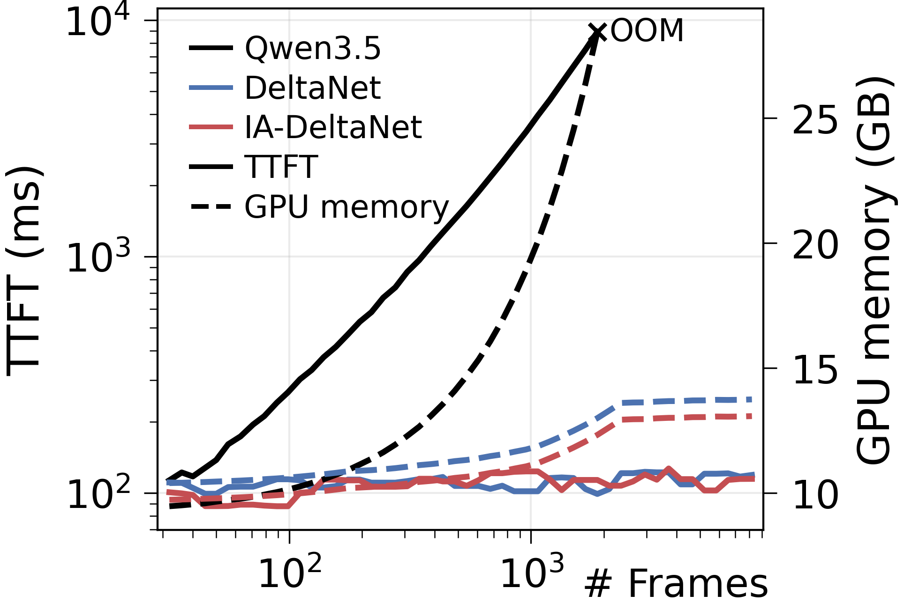

Analysis

(a) Synthetic past-key interference. Across anisotropies and eigenspace rotations, even the diagonal IA-DeltaNet stays below DeltaNet—suppressing anisotropic interference outweighs diagonal approximation error.

(b) Interference on real video keys. On Video-MME (medium subset), IA-DeltaNet yields lower write-direction interference $\mathcal{I}_t(\bm{w})$ than DeltaNet across timesteps, mirroring the synthetic trend.

(c) Needle recall (VNBench). IA-DeltaNet consistently retrieves more needle-frame information than DeltaNet/GatedDeltaNet, narrowing the gap to the unbounded-memory attention reference.

(d) Efficiency. Time-to-first-token and GPU memory remain stable as the number of frames grows; IA-DeltaNet adds only marginal overhead over DeltaNet, while attention OOMs on long inputs.